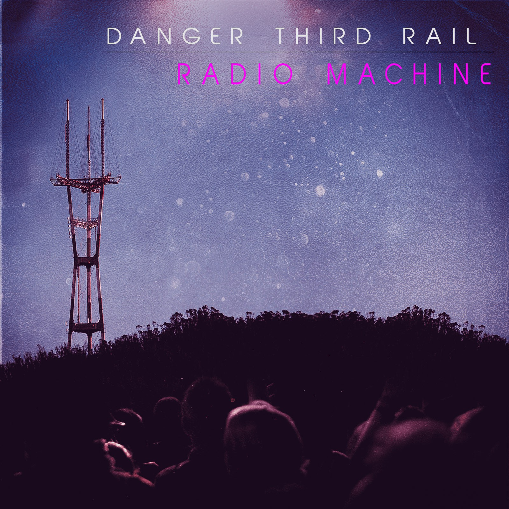

Danger
Third Rail
A recording project drifting from mellow ballad to frenzied punk, with way too many synths.

Radio Machine
Five songs that climb in intensity and tempo — from the mellow title-track ballad up to the frenzied punk of “Scream Into The Void.” The band’s most ambitious project to date.
Pink Fluffy Cloud
Two songs: the dreamy A-side title track and the punk B-side “No More.” Featuring Dan Sherizan on bass and session drums from Emily Dolan Davies.
About
Danger Third Rail is the recording project of Travis Briggs. Email your feedback — love it or hate it — to audiodude@gmail.com, or follow Travis on Mastodon.
All songs written by Travis Briggs and recorded primarily in his kitchen / home studio in San Francisco. All drums by Emily Dolan Davies. Album art done by artists for hire on Fiverr.
Travis thanks his wife Abby for always supporting his creative endeavors, Emily Dolan Davies — without whom these recordings wouldn’t be possible — and his family for a lifetime of support of his music.
Pink Fluffy Cloud
- Vocal tracking & mixing/mastering by Trakworx, South SF
- Vocals, guitar & synth by Travis Briggs
- Bass guitar by Dan Sherizan
Radio Machine
- Vocals, guitar, synth, piano & bass by Travis Briggs
- Mixed & mastered by Arturo Gómez Plasencia via soundbetter.com